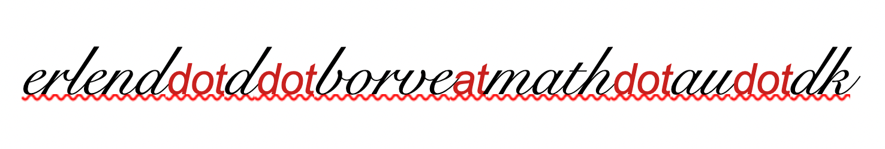

Erlend D. Børve
I am a mathematician, specialising in representation theory of algebras, tilting theory and generalisations, and related areas. Currently, I am a postdoctoral fellow in the Homological Algebra Group at the Aarhus University, working with Peter Jørgensen.
From June 2019 to June 2023, I was a PhD candidate at NTNU's Department of Mathematical Sciences, supervised by Aslak Buan. My PhD thesis is entitled Homotopical and geometric tools in representation theory. Before coming to Aarhus, I held postdoctoral positions in Grenoble (with Claire Amiot), Cologne (with Sibylle Schroll), and Graz (with Martin Kalck)
Photo credit: Kai Torgeir Dragland (2021)
Contact information
If you are a student at Aarhus University, please use Aarhus University email address. Office
1530/325Department of Mathematics
Aarhus University
Ny Munkegade 118
8000 Aarhus C
Denmark
Research output
- (with M. Kaipel, with an appendix by E. J. Hanson) Bricks and τ-tilting theory under base field extensions.
arXiv - (with J. F. Grevstad and E. S. Rundsveen) τ-tilting finiteness and
g -tameness: Incidence algebras of posets and concealed algebras, Journal of Algebra 684 (2025), 354–393.
arXiv Journal - Silting reduction and picture categories of 0-Auslander extriangulated categories.
arXiv - (with P. Trygsland) A theorem of Retakh for exact ∞-categories and higher extension functors.
arXiv - Two-term silting and τ-cluster morphism categories.
arXiv
Teaching
- Spring 2026: Lecturer in Homological Algebra at Aarhus
- Spring 2021: Lecturer in Basic Calculus 2 (remote version) at NTNU
- Spring 2021: Teaching assistant in Basic Calculus 2 at NTNU
- Autumn 2020: Teaching assistant in Basic Calculus 1 at NTNU
- August 2020: Lecturer in Crash Course in Calculus 1 at NTNU
- Spring 2020: Lecturer in Basic Calculus 2 (remote version) at NTNU
- Spring 2020: Teaching assistant in Basic Calculus 2 at NTNU
- Autumn 2019: Teaching assistant in Calculus 1 at NTNU
Conference organisation
- Autumn 2025: Graz Algebra and Geometry Seminar
- May 2024: CHARMS Summer School
- March 2023: Combinatorial aspects of Representation Theory (technical support)